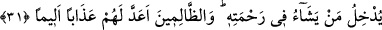

bu bilgileri onlara nasıl vereceğini ve onlarda bu bilgilerin kemâlini nasıl ortaya
çıkaracağını en iyi bilen hikmet sâhibidir.
31. O, dilediğini rahmetine dâhil eder. Zâlimlere gelince, onlar için elem verici bir
azap hazırlamıştır.
“O” Allah rahmetine girmesini “dilediğini rahmetine dâhil eder.” Bu son ifâde,
Allah Teâlâ’nın ilim ve hikmete dayalı olan “dilemesinin ahkâmını” beyân cümlesidir.
Yâni Allah rahmetine girmesini dilediği kimseleri rahmetine sokar. Rabbine doğru yol
tutma istikametine kulun dilemesini yönelten O’dur. Kulu cennete götüren îmân ve itâatı
nasip eden de O’dur.
“Zâlimlere gelince,” -ki onlar irâdelerini yukarda işâret ettiğimiz istikametin tersine
çevirenlerdir- “onlar için elem verici bir azap hazırlamıştır.” Çok büyük, acı verici
bir azap hazırlamıştır. Bu son kısmı da göz önüne alarak âyet-i kerîmeye şöyle anlam
vermek mümkündür: “Allah dilediğini rahmetine sokar, zâlimlere ise azap eder.” Buna
göre “e’adde lehum/onlara hazırlamıştır” ifâdesi, zâlimler kelimesinin tefsiri olur.
Bu âyet-i kerîme, Allah Teâlâ’nın bâzı kullarını kendi mârifetinin rahmetine
sokacağına işâret etmektedir. Buna karşılık hidâyet makamına sapıklığı, mârifet
makamına cehâleti koyan zâlim kullarına ise Allah ruh ve cesede elem veren hicap
azâbı hazırlamıştır. Yine onlara, Allah’tan başkalarıyla birlikte oldukları için hesap
vermek üzere Rabbın huzûrunda durma, sonra da fiillere takılıp Allah’a dönmedikleri
için cehennemde kalma azâbı hazırlamıştır.
Allah bu sûreyi haşr ve dirilme günü hazırlanmış olan azapla bitiriyor. Bu bitiriş, -
ibretli bir bakış ve derin bir anlayış sâhibi olan kimselere gizli kalamayacağı üzere-
sûrenin başlangıcına uygun olan güzel bir bitiriştir.[223]
[223]. İhsan sâhibi olan Allah’ın yardımıyla İnsan sûresinin tefsiri tamamlandı.